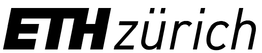
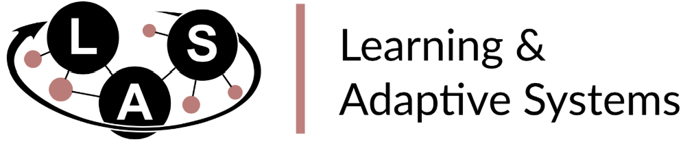
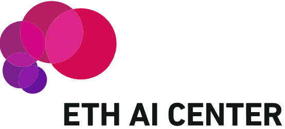
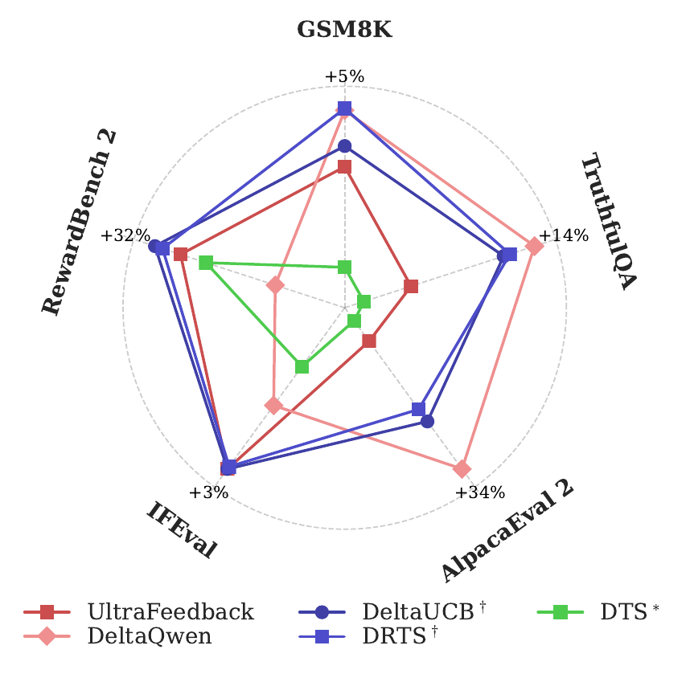
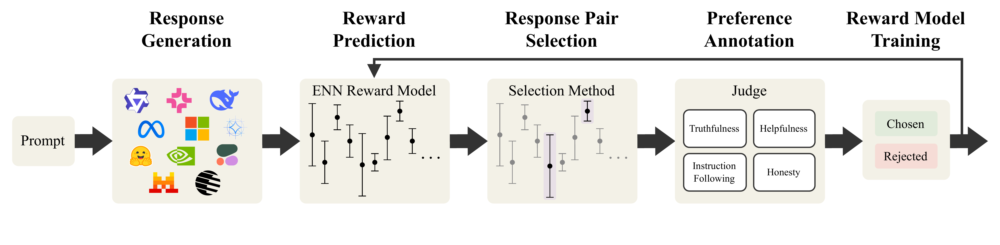
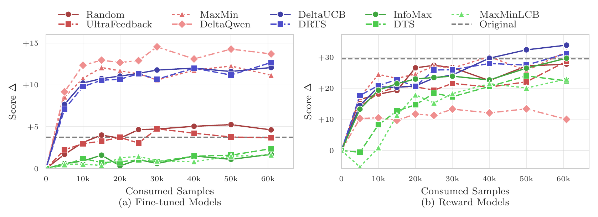
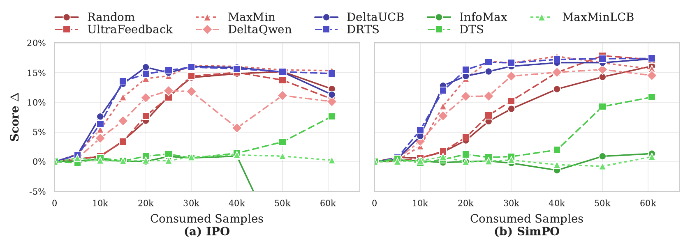
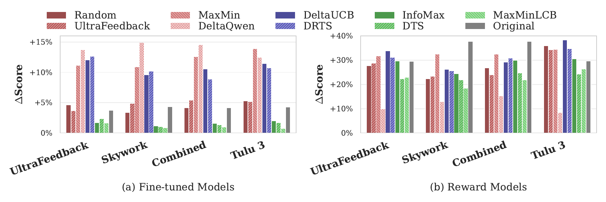

ActiveUltraFeedback: Efficient Preference Data Generation using Active Learning



Abstract
Reinforcement Learning from Human Feedback (RLHF) has become the standard for aligning Large Language Models (LLMs), yet its efficacy is bottlenecked by the high cost of acquiring preference data, especially in low-resource and expert domains. To address this, we introduce ActiveUltraFeedback, a modular active learning pipeline that leverages uncertainty estimates to dynamically identify the most informative responses for annotation. Our pipeline facilitates the systematic evaluation of standard response selection methods alongside Double Reverse Thompson Sampling (DRTS) and DeltaUCB, two novel methods prioritizing response pairs with large predicted quality gaps, leveraging recent results showing that such pairs provide good signals for fine-tuning. Our experiments demonstrate that ActiveUltraFeedback yields high-quality datasets that lead to significant improvements in downstream performance, notably achieving comparable or superior results with as little as one-sixth of the annotated data relative to static baselines. Our pipeline is available at GitHub and our preference datasets at Hugging Face.
Introduction
Reinforcement Learning from Human Feedback (RLHF) is a key technique for aligning large language models with human preferences, but its success depends heavily on the quality of the underlying preference data. In practice, collecting such data is costly, especially in expert or low-resource domains, which makes annotation efficiency a central challenge for scalable alignment.
Existing preference data pipelines often rely on static heuristics such as random sampling or best-of-N generation. While simple, these strategies can waste annotation budget on uninformative response pairs. More recent alternatives improve efficiency in specific settings, but are often tied to particular model families or training objectives, limiting their flexibility.
To address this, we introduce ActiveUltraFeedback, a modular active learning pipeline for preference data collection. The framework maintains uncertainty-aware estimates of response quality and uses them to select the most informative response pairs for annotation. Within this setup, we evaluate standard selection methods and propose two new approaches, Double Reverse Thompson Sampling (DRTS) and DeltaUCB, which prioritize pairs with large predicted quality gaps.
Across reward model and downstream benchmarks, ActiveUltraFeedback consistently improves data efficiency over prior heuristics and dueling bandit baselines. In particular, it can match or outperform existing methods while using substantially fewer annotations, making it a practical approach for building high-quality preference datasets at lower cost.

Methodology

ActiveUltraFeedback is a modular pipeline for efficient preference data collection. Starting from a set of prompts, the system processes data in batches and iteratively builds a preference dataset. For each prompt, it first generates a diverse pool of candidate responses using multiple open-weight language models and prompting principles designed to increase variation in content and quality.
Next, the pipeline uses a reward model with uncertainty estimates to score the candidate responses. Based on these estimates, it selects a pair of responses for preference annotation. This selection step is the core of the framework: instead of annotating arbitrary pairs, ActiveUltraFeedback prioritizes response pairs that are expected to be most informative.
Within this setup, we compare standard heuristics and dueling bandit methods, and we introduce two new strategies: Double Reverse Thompson Sampling (DRTS) and DeltaUCB. Both methods are designed to favor response pairs with large predicted quality gaps, which can provide stronger learning signals for downstream reward modeling and fine-tuning.
After annotation, the newly collected preference pairs are added to the dataset, and the reward model is updated before the next batch is processed. This iterative loop makes ActiveUltraFeedback scalable, flexible, and applicable across different datasets, model families, and downstream alignment methods.
Experimental Setup and Results
We evaluate ActiveUltraFeedback along three main dimensions: overall performance, sample efficiency, and generalization across datasets and training algorithms. Using prompts from the UltraFeedback dataset as the main benchmark, we generate preference datasets with different response-pair selection methods, train reward models and fine-tuned models on the resulting data, and compare them on RewardBench 2 as well as downstream benchmarks including GSM8K, IFEval, TruthfulQA, and AlpacaEval 2. Throughout, delta scores denote performance changes relative to the base model, so positive values indicate improvements over the starting checkpoint.
Across these evaluations, our proposed methods, DRTS and DeltaUCB, consistently produce the strongest overall results. They outperform common heuristic baselines and standard dueling bandit methods on both reward-model evaluation and downstream fine-tuning. In particular, they generate preference datasets that are more informative and more broadly useful than datasets collected with random sampling or existing active learning baselines.
A key finding is that ActiveUltraFeedback is highly sample-efficient. With DRTS and DeltaUCB, models trained on only a small fraction of the collected preference pairs can already match or exceed the performance of models trained on much larger datasets generated by standard methods. This shows that careful response-pair selection can significantly reduce annotation cost while maintaining or improving final model quality.


We also find that these gains generalize across prompt sources and preference optimization algorithms. While some baselines perform well only in narrow settings, DRTS and DeltaUCB remain strong across multiple datasets and training objectives, making ActiveUltraFeedback a flexible and practical approach for efficient preference data generation.

Conclusion & Future Work
We introduce ActiveUltraFeedback, a modular active learning pipeline for preference data generation that improves annotation efficiency by selecting the most informative response pairs for labeling. Across our evaluations, the framework consistently produces stronger datasets than standard static heuristics, with our proposed methods DRTS and DeltaUCB delivering particularly strong performance for both reward modeling and downstream fine-tuning.
A key advantage of ActiveUltraFeedback is its flexibility: the pipeline is designed as a platform that supports different response selection methods, uncertainty estimators, and judges, making it broadly applicable across datasets and training objectives. Our results show that it is possible to build high-quality preference datasets that are not tightly tied to a single downstream algorithm or model family.
Looking ahead, promising directions include improving uncertainty estimation, incorporating stronger diversity constraints, extending active learning from response selection to prompt selection, and supporting human annotation workflows through interactive tools. Another important direction is reducing computational cost, for example by actively selecting which models to query for responses rather than generating from a large fixed pool. To support future research in this area, we release our generated datasets and pipeline artifacts for broader use.
BibTeX
@misc{melikidze2026activeultrafeedbackefficientpreferencedata,
title={ActiveUltraFeedback: Efficient Preference Data Generation using Active Learning},
author={Davit Melikidze and Marian Schneider and Jessica Lam and Martin Wertich and Ido Hakimi and Barna Pásztor and Andreas Krause},
year={2026},
eprint={2603.09692},
archivePrefix={arXiv},
primaryClass={cs.LG},
url={https://arxiv.org/abs/2603.09692},
}